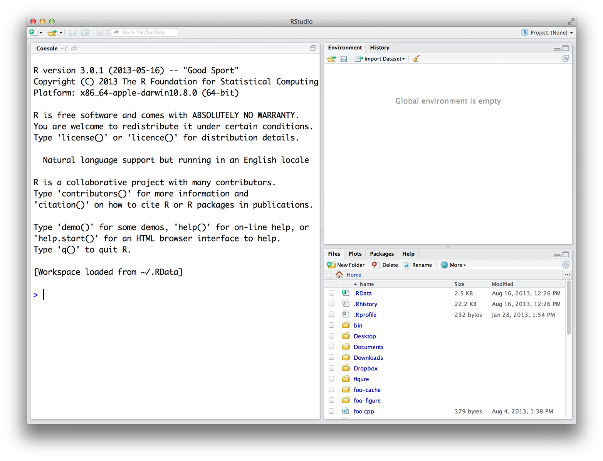

knitr::include_graphics("images/hopr_aa01.png")
Rを使い始めるには、まず自分用のコピーを入手する必要があります。この付録では、R本体と、Rをより使いやすくするためのソフトウェアであるRStudioのダウンロード方法について説明します。Rのダウンロードから、最初のRセッションを起動するまでの手順を見ていきましょう。
RとRStudioはどちらも無料で、簡単にダウンロードできます。
Rは、The Comprehensive R Archive Network（CRAN）のウェブページを通じて言語を公開している国際的な開発者チームによって維持されています。ウェブページのトップには、Rをダウンロードするための3つのリンクがあります。Windows、Mac、Linuxの中から、お使いのオペレーティングシステム（OS）に該当するリンクをクリックしてください。
WindowsにRをインストールするには、“Download R for Windows” のリンクをクリックします。次に “base” リンクをクリックしてください。その後、新しいページの最上部にある最初のリンクをクリックします。このリンクは “Download R 3.0.3 for Windows” のような形式になっています（3.0.3 の部分はRの最新バージョンに置き換わります）。このリンクからインストーラーがダウンロードされます。このプログラムを実行し、表示されるインストールウィザードに従って進めてください。ウィザードによって、Rがプログラムファイルフォルダにインストールされ、スタートメニューにショートカットが作成されます。なお、新しいソフトウェアをインストールするには、適切な管理者権限が必要になることに注意してください。
MacにRをインストールするには、“Download R for Mac” のリンクをクリックします。次に、 R-3.0.3 のパッケージリンク（またはRの最新リリースのパッケージリンク）をクリックしてください。インストールプロセスを案内するインストーラーがダウンロードされます。手順は非常に簡単です。インストーラーではインストール内容をカスタマイズできますが、ほとんどのユーザーにとってはデフォルトの設定が適しています。設定を変更する必要があるケースはほとんどありません。新しいプログラムをインストールする際にパスワードが必要な設定になっている場合は、ここでも入力が求められます。
バイナリ（Binaries）対ソース（Source）
Rは、プリコンパイル済みのバイナリからインストールすることも、任意のOS上でソースからビルドすることもできます。WindowsやMacの場合、バイナリからのインストールは極めて簡単で、独自のインストーラーにバイナリが同梱されています。これらのプラットフォームでもソースからRをビルドすることは可能ですが、プロセスは非常に複雑であり、ほとんどのユーザーにとって大きなメリットはありません。Linuxシステムの場合はその逆です。一部のシステム向けにはプリコンパイル済みのバイナリも用意されていますが、Linuxにインストールする場合はソースファイルからRをビルドするのが一般的です。CRANのウェブサイトのダウンロードページには、Windows、Mac、Linuxの各プラットフォーム向けに、ソースからRをビルドする方法についての情報が掲載されています。
多くのLinuxシステムではRがプリインストールされていますが、バージョンが古い場合は最新版を入手したくなるでしょう。CRANのウェブサイトでは、“Download R for Linux” のリンクから、Debian、Redhat、SUSE、Ubuntuシステム向けにRをソースからビルドするためのファイルを提供しています。リンクをクリックし、インストールしたいLinuxのバージョンに合わせてディレクトリを辿ってください。具体的なインストール手順は、使用しているLinuxシステムによって異なります。CRANでは、ソースファイルのセットごとに、システムへのインストール方法を説明したドキュメントやREADMEファイルを同梱してプロセスを案内しています。
32ビット対64ビット
Rには32ビット版と64ビット版の両方があります。どちらを使うべきでしょうか？ほとんどの場合、どちらでも問題ありません。どちらのバージョンも32ビット整数を使用しているため、数値計算の精度は同じです。違いは、それぞれのバージョンがメモリを管理する方法にあります。64ビット版のRは64ビットのメモリポインタを使用し、32ビット版のRは32ビットのメモリポインタを使用します。これは、64ビット版のRの方が、より広大なメモリ空間を使用（および検索）できることを意味します。
経験則として、常にではありませんが、32ビット版のRの方が64ビット版よりも高速です。一方で、64ビット版はより大きなファイルやデータセット（Dataset）を、メモリ管理の問題を抑えて扱うことができます。どちらのバージョンでも、許容されるベクトルの最大サイズは約20億要素で頭打ちになります。OSが64ビットプログラムをサポートしていない場合や、RAMが4GB未満の場合は、32ビット版のRが適しています。WindowsおよびMacのインストーラーは、システムが64ビットをサポートしていれば、両方のバージョンを自動的にインストールします。
Rは、Microsoft WordやInternet Explorerのように、開いてすぐに使い始められるようなプログラムではありません。むしろ、RはC、C++、UNIXのようなコンピュータ言語です。Rを使用するには、R言語でコマンドを記述し、それをコンピュータに解釈（Interpret）させる必要があります。昔は、80年代の映画に出てくるハッカーのように、UNIXターミナルウィンドウでRコードを実行していました。現在では、ほとんどの人がRStudioというアプリケーションを使用してRを動かしており、私もそれをお勧めします。
RとUNIX
現在でも、UNIXやBASHのウィンドウで以下のコマンドを入力することでRを実行できます。
RこれによりRインタープリタが開きます。作業を終えたら、 q() を実行することでインタープリタを閉じることができます。
RStudioは、Microsoft Wordのような「アプリケーション」です。Wordが英語（あるいは日本語）の執筆を助けてくれるように、RStudioはRの記述を助けてくれます。本書を通じてRStudioを使用するのは、それがRの使用を格段に容易にするからです。また、RStudioのインターフェースはWindows、Mac OS、Linuxで共通しています。そのため、本書の内容と皆さんの手元の画面を一致させやすくなります。
RStudioはこちらから無料でダウンロードできます。「Download RStudio」ボタンをクリックし、表示される簡単な指示に従ってください。インストールが完了したら、デスクトップのアイコンをクリックするなど、他のプログラムと同じようにRStudioを開くことができます。
RのGUI
WindowsやMacのユーザーは通常、ターミナルウィンドウからプログラミングを行いません。そのため、Windows版とMac版のRのダウンロードファイルには、Rコードを実行するためのターミナルのようなウィンドウを開くシンプルなプログラムが付属しています。WindowsやMacでRのアイコンをクリックしたときに開くのはこれです。これらのプログラムは基本的なターミナルウィンドウよりも少しだけ多機能ですが、大きな差はありません。これらは「Windows R GUI」や「Mac R GUI」と呼ばれることもあります。
RStudioを開くと、?fig-layout に示すように、3つのペイン（Pane）に分かれたウィンドウが表示されます。最も大きなペインはコンソール（Console）ウィンドウです。ここでRコードを実行し、結果を確認します。このコンソールウィンドウは、UNIXコンソールやWindows/MacのGUIでRを実行したときに表示されるものと全く同じです。それ以外の部分は、RStudio固有の機能です。他のペインには、テキストエディタ、グラフィックスウィンドウ、デバッガ（Debugger）、ファイルマネージャなどが隠れています。これらのペインについては、学習を進める中で必要に応じて順次解説していきます。
knitr::include_graphics("images/hopr_aa01.png")
それでもRをダウンロードする必要はありますか？
RStudioを使用する場合でも、コンピュータにR本体をダウンロードする必要があります。RStudioはコンピュータ内にあるRを使用するための手助けをしますが、RStudio自体にRは同梱されていないためです。
RとRStudioの両方がコンピュータにインストールされたら、RStudioプログラムを開くことでRの使用を開始できます。他のプログラムと同様に、アイコンをクリックするか、Windowsの実行プロンプトで「RStudio」と入力してRStudioを開いてください。